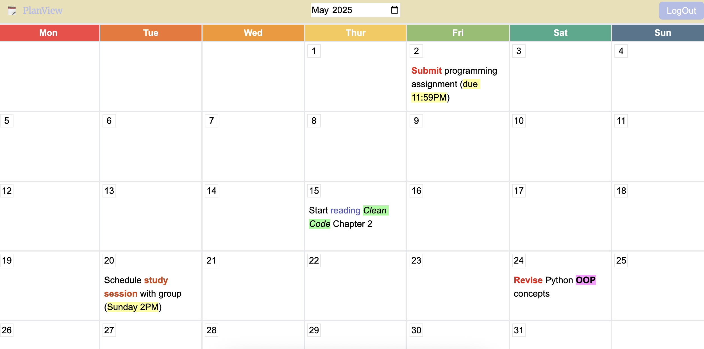
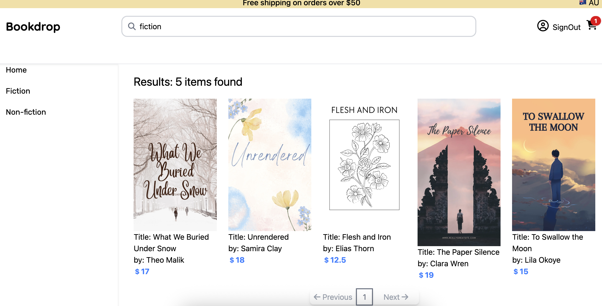

PlanView - a calendar app

🛠 Next.js, TypeScript, Tiptap, Prisma, PostgreSQL
🗓 Helps users organize monthly tasks with clean UI and rich text
support.
Usage Tip: Click any date to add and view your
to-dos.
Note: You can click the "Try it out as guest" button in the
headBar to login as a guest.
Bookdrop - a bookstore app

🛠 Next.js, TypeScript, Tailwind, PostgreSQL, Stripe
📚 An online bookstore interface that allows users to browse,
search, and explore books by category. Users can purchase books
via Stripe. Designed with a clean UI and responsive layout.
Usage Tip: Press "Enter" without typing anything
to browse all available books, or search by title/author. When
checking out with Stripe, you can use repeating 42s for all fields
(card number, expiry, CVC, and ZIP) to complete a test payment
successfully.
Note: Only 12 books are included in this demo. Some searches
may return no results.